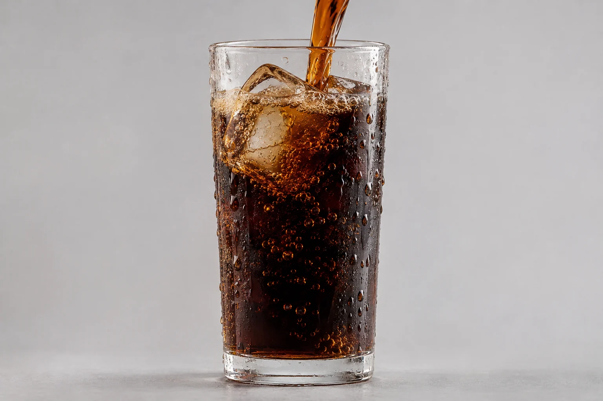
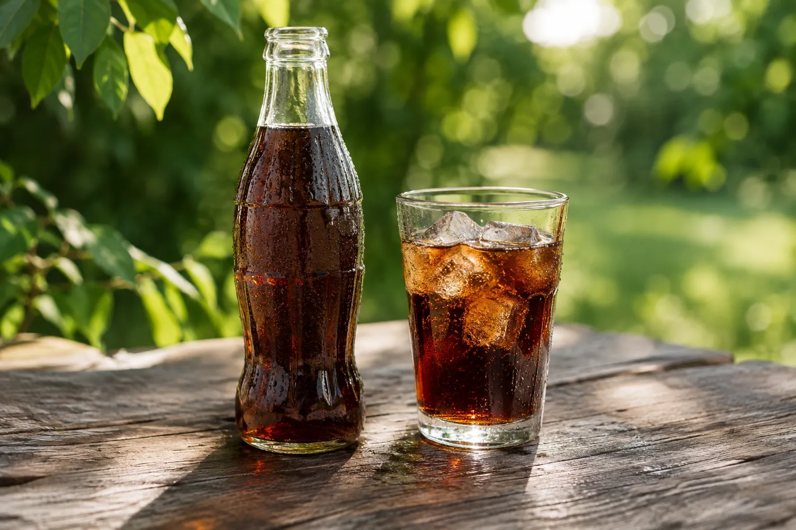

01 爽快感
のどを通る、
あの刺激。
コーラの魅力を一つに絞るなら、ひと口目の爽快感です。強めの炭酸が舌とのどを一気に冷まし、甘みがそのあとを追いかけます。疲れた午後も、暑い日の帰り道も、この一瞬で気分が切り替わります。
ひと口目まで
注いで、はじけて、
飲みごろ。
グラスに注ぐ
グラスを少し傾けて、静かに注ぎます。
泡がはじける
立ちのぼる泡が落ち着くのを、少しだけ待ちます。
ひと口目へ
よく冷えているうちに、どうぞ。
02 味
甘いだけでは、
終わらない。
- 甘み
- 最初に来る、はっきりした甘さ。冷たいほど輪郭が立ちます。
- 酸味
- 柑橘を思わせる軽い酸味が、甘さを重たくしません。
- 香り
- バニラやシナモンを思わせるスパイスの香りが、鼻に抜けます。
- 炭酸
- 細かい泡が口の中ではじけ、後味を軽くします。
泡の一粒まで、おいしさのうち。
03 シーン
どんな場面にも、
合う一杯。
- 揚げ物や肉料理のとき強い炭酸が口の中の脂をさっぱり流します。
- 外で過ごす夏の日氷をたっぷり入れて、汗が引くまでゆっくり。
- 仕事の合間数口で気分が切り替わります。

04 飲み方
いつもの一杯を、
もう少しおいしく。
- しっかり冷やす飲む前に冷蔵庫で4℃前後まで。炭酸が抜けにくく、味が引き締まります。
- グラスは先に冷やす氷を入れて少し置くと、注いだときの泡立ちが落ち着きます。
- 氷はグラスいっぱいに氷が多いほど溶けにくく、最後まで薄まりません。
- 氷に当てずに、壁沿いに注ぐ泡を逃がさず、炭酸が長持ちします。